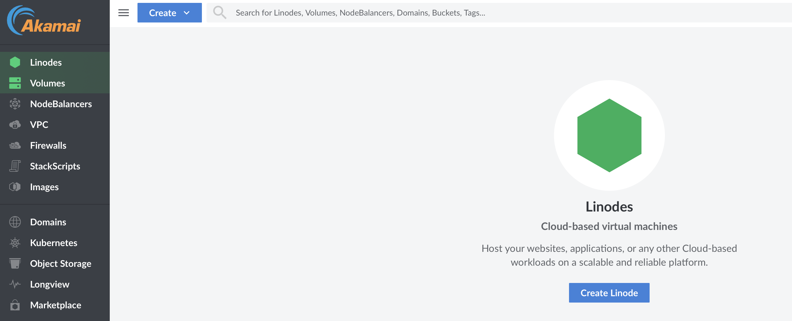

Today we’re going to be setting up a “Foundry Virtual Tabletop” Server on a cloud hosted platform. I’ll stay generic when it comes to cloud providers as there are differences between providers, but the basics remain the same. I'll be using Linode today as it seems to be one of the more basic providers while providing a static IP address. (If you don’t have the option of a static IP, I will address this as well.) This tutorial will assume you already have an account with the Foundry website and have purchased a license and are thus familiar with the website FoundryVtt!
To start with, we will need an account with the provider of your choice. Once an account has been created, you should be greeted with a screen like the one here. [1]
We’ll create a new virtual machine (called a ‘linode’ here) and we want to select the options that make most sense for what we will be doing. FVTT recommends 2 cpu cores and 4GB of RAM, so we’ll select those as our options and Ubuntu 23.10 for our OS. If given the option to use a private IP, select it now, as it cuts out a step later in the writeup. From here, most of the work will be done via command line, so set your connection up to your new virtual machine as you see fit. I recommend connecting via SSH.
To start with, we will need an account with the provider of your choice. Once an account has been created, you should be greeted with a screen like the one here [1]. We’ll create a new virtual machine (called a ‘linode’ here) and we want to select the options that make most sense for what we will be doing. FVTT recommends 2 cpu cores and 4GB of RAM, so we’ll select those as our options and Ubuntu 23.10 for our OS. If given the option to use a private IP, select it now, as it cuts out a step later in the writeup. From here, most of the work will be done via command line, so set your connection up to your new virtual machine as you see fit. I recommend connecting via SSH.
Most cloud providers will create your vm using a template, so the installation will likely have been completed, however, if you are installing the OS on “bare” hardware, you will need to go through the installation steps at this point. Make sure to enable openssh server so that you will be able to connect to your machine via SSH.Once we’re greeted with [2] this screen, it will be time to do a little housekeeping. Using the package manager APT, we will update the system to the most up to date packages to keep the system secure and stable. My system is already up to date, but the following commands are all that are needed to update ubuntu. [3] (code block: sudo apt update | sudo apt upgrade –y)
Because we want to run this as a separate service, we want to run this under an unattended account. To do this, we will need to create a new user account, and give it sudo permissions. (code block: sudo adduser foundry)(code block: sudo usermod -aG sudo foundry) You will need to give the new account a password. Make sure that it is different from your first user account. This server is exposed to the internet, so don’t skimp on security. Now switch over to the new account so we can get to installing your new server! (code block: su - foundry)
The only extra resource we need (unless you need a dynamic DNS. For that, you can follow this guide here: https://pimylifeup.com/raspberry-pi-duck-dns/ ) is a repository that doesn't come with ubuntu by default. the node repository will need to be installed using the following code. *editor's note: unzip and nano are not always installed by default. The code to install node has been adjusted to also install unzip and nano.
(code block: sudo apt install -y ca-certificates curl gnupg sudo mkdir -p /etc/apt/keyrings curl -fsSL https://deb.nodesource.com/gpgkey/nodesource-repo.gpg.key | sudo gpg --dearmor -o /etc/apt/keyrings/nodesource.gpg echo "deb [signed-by=/etc/apt/keyrings/nodesource.gpg] https://deb.nodesource.com/node_20.x nodistro main" | sudo tee /etc/apt/sources.list.d/nodesource.list)
Now that that is done, we can update again and see that the repo has now been added to the list of available repos that APT can use. (code block: sudo apt update) [4]
This next section is timed, so be ready to be somewhat quick. In your web browser, navigate to the Foundry website, and head to your licenses page once logged into your account. As we are using Linux make sure that you select that option in the appropriate drop down, and select the “Timed URL” option, otherwise you’ll need to use rsync to move files between machines. Once clicked, your link will be copied to your clipboard. (A terrifying prospect for mac users. 😉) The link will stay live for 5 minutes before expiring. Paste your link to a note as you’ll need to wrap that link in the code below before pasting it all into your terminal. (code block: wget --output-document ~/foundry/foundryvtt.zip "